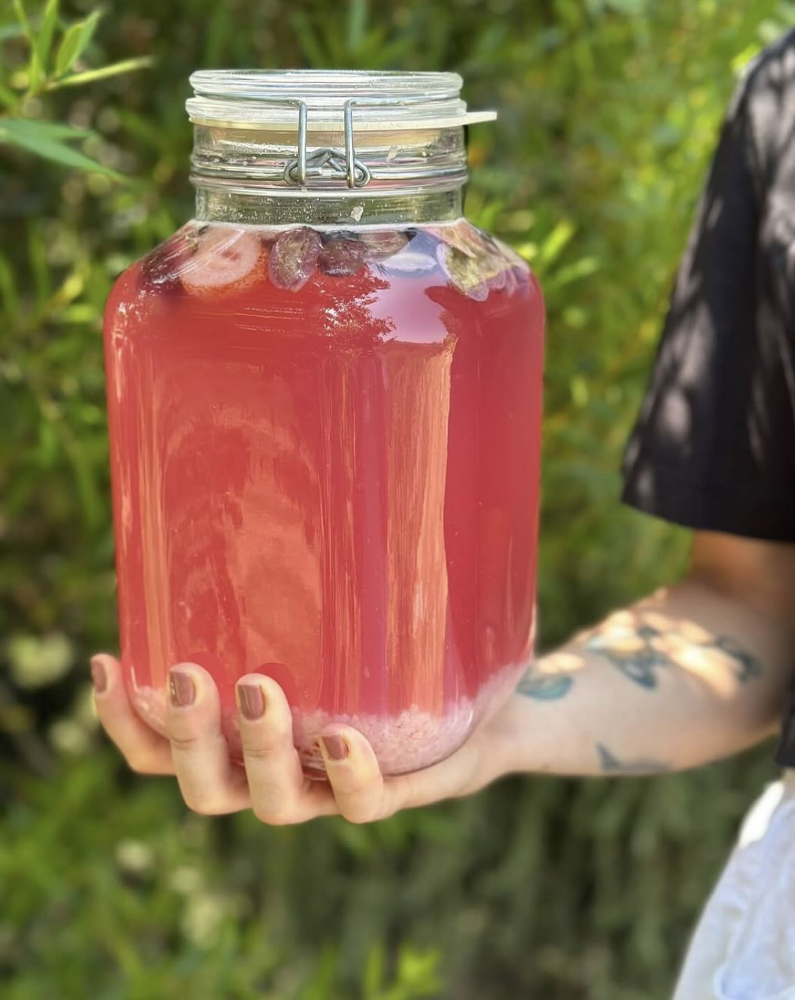

NUTRITION FOR PCOS: A HOLISTIC APPROACH
Polycystic Ovary Syndrome (PCOS) is one of the most common hormonal disorders affecting women of reproductive age. As a nutritionist, I've seen firsthand how the right dietary approach can significantly improve symptoms and quality of life for women with PCOS.

PCOS often involves insulin resistance, which means your body has difficulty using insulin effectively. This can lead to weight gain, difficulty losing weight, and increased cravings for sugary foods. The good news? Nutrition can be a powerful tool to help manage these symptoms.
Key nutritional strategies for PCOS include:
• Focus on complex carbohydrates with a low glycemic index
• Include plenty of fiber-rich vegetables and fruits
• Choose lean proteins at each meal
• Incorporate healthy fats like omega-3 fatty acids
• Consider anti-inflammatory foods

Remember, every woman's experience with PCOS is unique. What works for one person may not work for another, which is why personalized nutrition plans are so important. If you're struggling with PCOS symptoms, consider working with a qualified nutritionist who can help you develop a sustainable, individualized approach.
Don't let PCOS control your life. With the right nutritional support and lifestyle changes, you can take back control and feel your best.